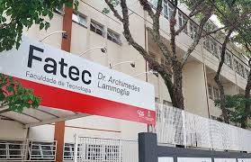

Saiba mais sobre as Fatecs e o Centro Paula Souza
Começar o Ensino Superior pode ser um passo fundamental a caminho da realização pessoal, do sonho de tantos jovens por uma carreira sólida e um futuro com infinitas possibilidades. Nas Fatecs, você pode escolher entre cerca de 100 cursos superiores focados em tecnologias voltadas às mais diversas áreas, desde as tradicionais, como agronegócio, indústria e construção civil, até campos emergentes como inteligência artificial, e-commerce e ESG.
Articulados com as necessidades reais do mercado e elaborados em parceria com representantes dos setores produtivos, os cursos superiores de tecnologia das Fatecs formam profissionais em sintonia com as constantes atualizações do mundo do trabalho. Público e gratuito, é o ensino ideal para quem deseja ingressar no mercado de trabalho ou se qualificar em busca de ascensão profissional.
As Fatecs estão presentes em todas as regiões do Estado de São Paulo. Escolha uma unidade perto de você e comece a construir seu futuro. Venha para as Fatecs!
